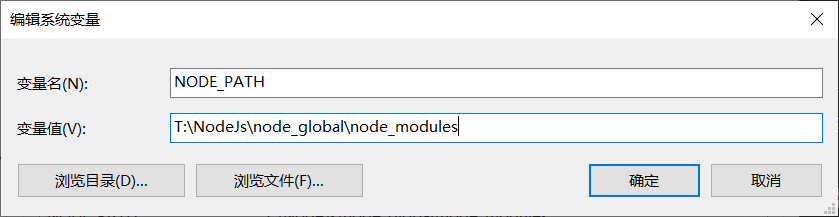
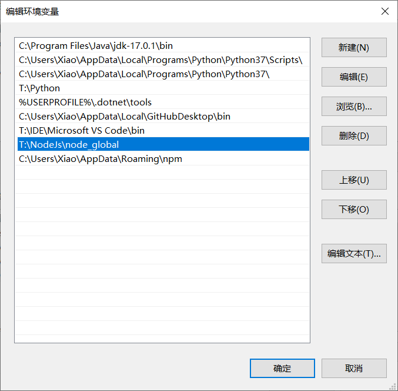
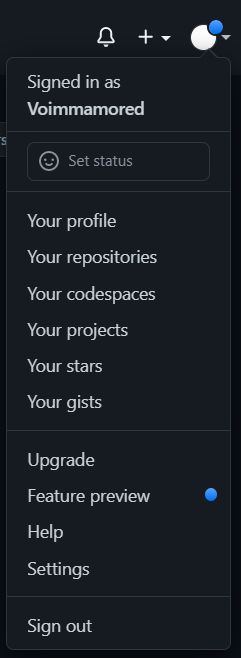
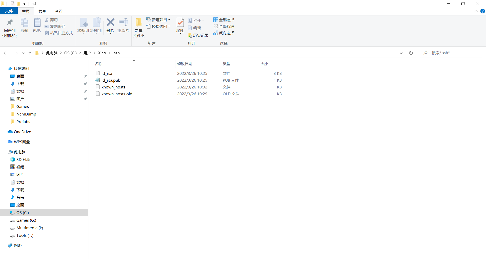
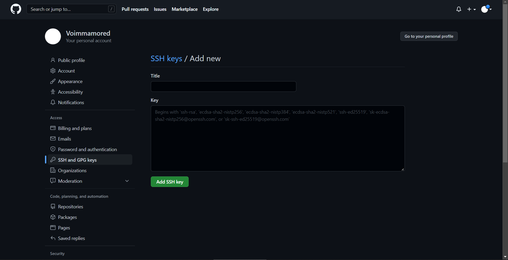

所需工具
Node.js
Node.js是一个基于Chrome V8引擎的JavaScript运行环境，让JavaScript 运行在服务端的开发平台，它让JavaScript成为与PHP、Python、Perl、Ruby等服务端语言平起平坐的脚本语言。
Git
Git是一个开源的分布式版本控制系统，可以有效、高速地处理从很小到非常大的项目版本管理。
Hexo
Hexo是基于Node.js的博客框架，可以方便地生成静态博客页面，并部署在Github上。
搭建过程
安装Node.js
直接到官网下载安装即可，现版本会自带对Node.js依赖的包进行管理的npm。
进入控制台，输入以下命令，如果出现版本号则安装成功
node -v
npm -v
如果想要调整npm安装的全局模块以及cache缓存的路径，可以调整环境变量。
分别在系统变量与环境变量的Path下作如下调整（具体路径自选）：

 调配完变量后在控制台执行如下命令即可：
npm config set prefix "D:_global"
npm config set cache "D:_cache"
最后全局安装express模块测试一下（所有的安装操作都尽量在管理员权限下执行，否则可能有安装文件缺失或者莫名其妙的报错）：
npm install express -g
配置成功的话会看到express文件安装在刚才配置的全局模块路径的文件夹中。
安装Git
直接到官网下载安装即可。
安装后进入控制台输入命令，出现版本号则说明安装成功。
git --version
在Github搭建仓库
在Github创建仓库，仓库名必须为username.github.io，其中username以点击右上角显示出的名字为准。

生成SSH Keys
进入Git Bash界面，输入指令：
ssh-keygen -t rsa -C "邮件地址"
连点四次回车，此时会在C:\Users\Username的.ssh文件夹下生成文件。 
进入GitHub设置里的SSH and GPG Keys页面，选择新建SSH keys。打开.pub文件，拷贝里面的所有内容到SSH Keys，最后Add SSH key即可。  最后输入命令检验是否成功：
ssh -T git@github.com
本地生成博客
选择一个空文件夹作为博客在本地存放的位置，在空文件右键打开Git Bash页面，输入指令安装hexo。
npm install -g hexo
随后进行初始化：
hexo init
如果出现unable to
access类的报错，一般为网络问题，多次重试即可。
如果和我一样出现npm命令无法识别等等的报错，可以尝试安装cnpm：
npm install -g cnpm --registry=https://registry.npm.taobao.org
再转用cnpm进行上述操作即可:
cnpm install -g hexo
出现“Start blogging with Hexo”!，就说明我们的博客安装成功了！初始化后就可以在文件夹中看到本地的博客内容了。
部署博客到网上
打开博客文件夹下的_config.yml文件，在底部Deployment下添加如下内容：
1
2
3
4deploy:
type: git
repository: https://github.com/username/username.github.io.git
branch: main
hexo g && hexo d
就可以在网址username.github.io访问我们的博客了。